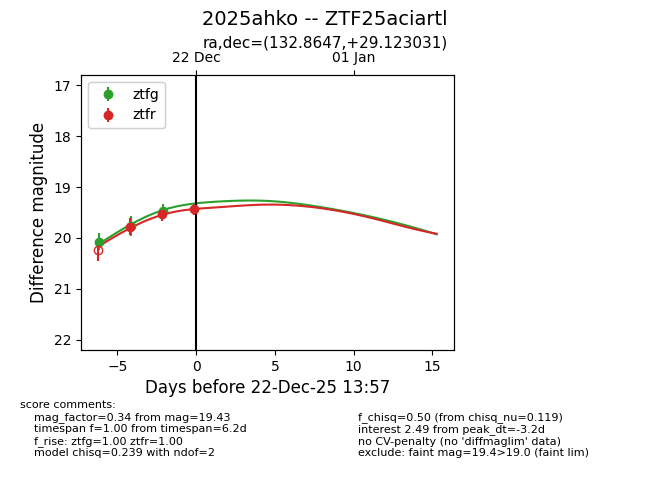
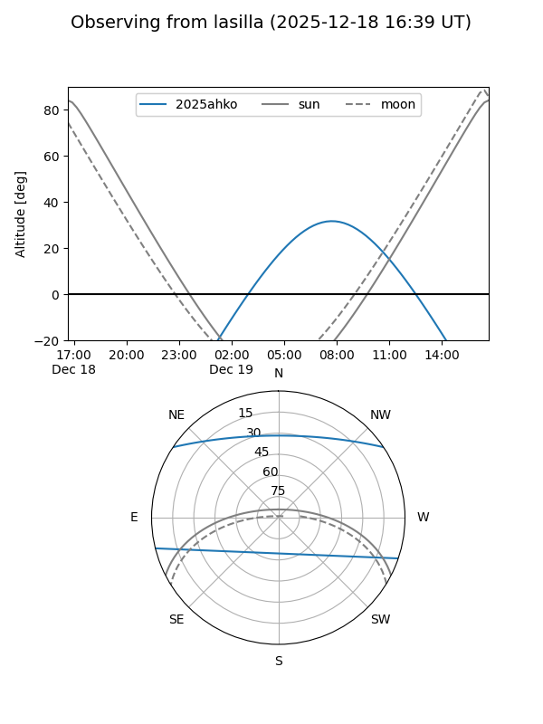
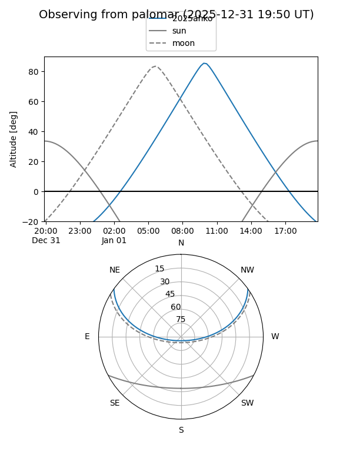
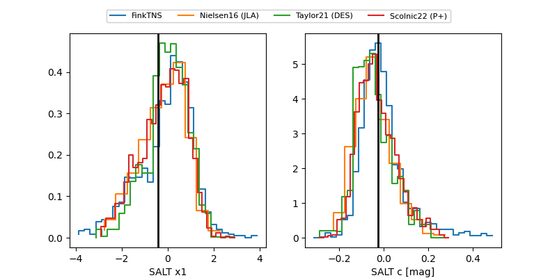

2025ahko
Target 2025ahko at 2025-12-18 11:18
Aliases and brokers:
FINK: fink-portal.org/ZTF25aciartl
Lasair: lasair-ztf.lsst.ac.uk/objects/ZTF25aciartl
ALeRCE: alerce.online/object/ZTF25aciartl
TNS: wis-tns.org/object/2025ahko
YSE: ziggy.ucolick.org/yse/transient_detail/2025ahko
alt names
ZTF25aciartl (ztf,fink_ztf)
2025ahko (tns,yse)
Coordinates:
equatorial (ra, dec) = 132.8647,+29.12303
equatorial (HMS+DMS) = 08:51:27.53,+29:07:22.91
galactic (l, b) = (195.7478,+37.64150)
Photometry
last ztfg=20.07
1 ztfg detections
Lightcurve

Visibility


Additional plots
